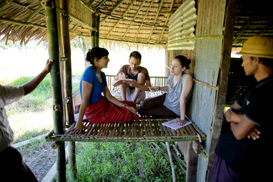

Photo credit: Proximity Designs
Myanmar’s unprecedented, rapid uptake of mobile technology is well documented. Yet in 2015, very few mobile solutions existed which were designed specifically for Myanmar, let alone Myanmar’s rural user base. Proximity’s Farm Advisory Service (FAS) saw great opportunity to leverage mobile reach to expand and augment their already impactful, in-person ag extension work, and commissioned a design project in partnership with Studio D Radiodurans. The Proximity-Studio D team spent 6 weeks in the field among rural phone users to understand mobile habits, uncover and define opportunities, and test and validate prototypes. 1 to 1000 was the chosen project name, to highlight the potential of digital to scale FAS’ impact.
Photo credit: Proximity Designs
Guided by the principle of people over tech, the team dug beneath observed mobile behavior to understand farmers’ digital identities. Based on these insights, communication systems were quickly tested in parallel with ongoing services by the FAS team. The team eventually delivered an immediately-adoptable solution of a semi-automated SMS communication channel, augmenting a variety of FAS’ services. The Shwe Phyo SMS service launched soon after and has continually been refined and expanded since.
The 1 to 1000 design project was led by Studio D., while I was Proximity’s design lead. I managed Proximity’s relationship with Studio D., contributed to the research and rapid prototyping as a team member during the design project, and oversaw bringing the product to launch after the design project, working with both software developers and agronomists. It was an exciting project during a dynamic time in the country, and I’m proud to have been among the first (and still very few) groups with a digital focus to invest in, and design for, rural Myanmar.
Photo credit: Proximity Designs